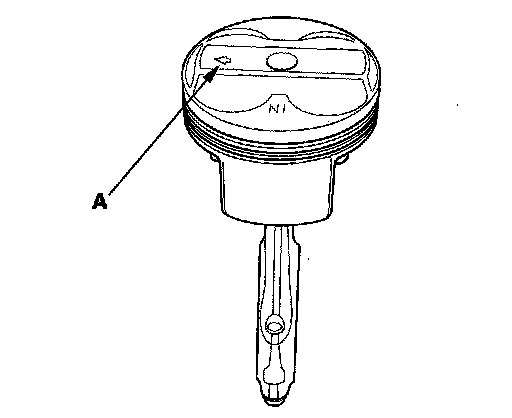
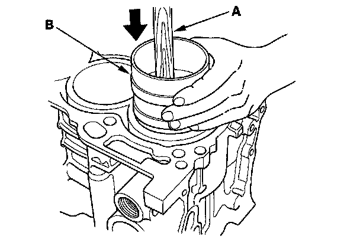
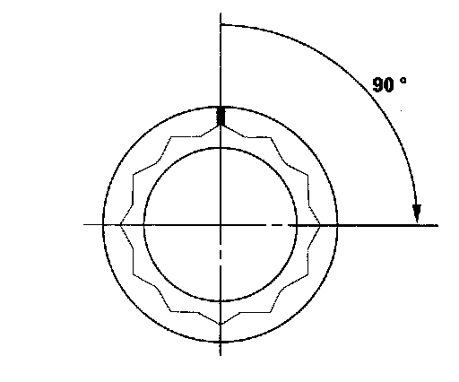
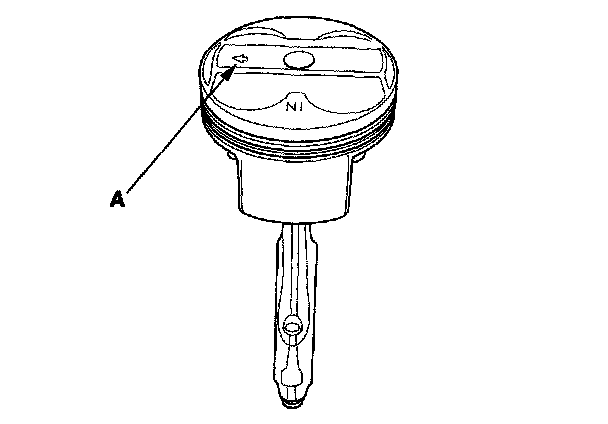
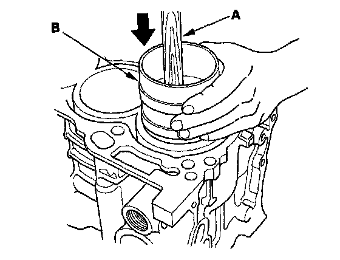

Piston Installation
Piston InstallationIf the Crankshaft is Already Installed
1. Set the crankshaft to bottom dead center (BDC) for each cylinder as its piston is installed.
2. Remove the connecting rod caps, then install the ring compressor. Check that the bearing is securely in place.
3. Apply new engine oil to the piston, inside of the ring compressor, and the cylinder bore, then attach the ring compressor to the piston/connecting rod assembly.
4. Position the mark (A) to face the cam chain side of the engine.

5. Position the piston in the cylinder, and tap it in using the wooden handle of a hammer (A). Push down on the ring compressor (B) to prevent the rings from expanding before entering the cylinder bore.

6. Stop after the ring compressor pops free, and check the connecting rod-to-crank journal alignment before pushing the piston into place.
7. Check the connecting rod bearing clearance with plastigage.
8. Inspect the connecting rod bolts.
9. Install the rod caps with bearings. Torque the bolts to 29 N-m (3.0 kgf-m, 22 lbf-ft).
10. Tighten the connecting rod bolts an additional 90°.

NOTE: Remove the connecting rod bolt if you tightened it beyond the specified angle, and go back to step 8 of the procedure. Do not loosen it back to the specified angle.
If the Crankshaft is Not Installed
1. Remove the connecting rod caps, then install the ring compressor, and check that the bearing is securely in place.
2. Apply new engine oil to the piston, inside of the ring compressor, and the cylinder bore, then attach the ring compressor to the piston/connecting rod assembly.
3. Position the mark (A) to face the cam chain side of the engine.

4. Position the piston in the cylinder, and tap it in using the wooden handle of a hammer (A). Push down on the ring compressor (B) to prevent the rings from expanding before entering the cylinder bore.

5. Position all pistons at top dead center (TDC).